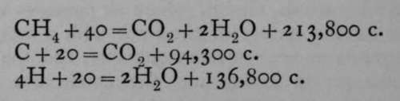

Energy. Part 3
Description
This section is from the book "Modern Chemistry", by William Ramsay. Also available from Amazon: Modern Chemistry: Theoretical and Modern Chemistry (Volume 2).
Energy. Part 3
Many measurements of the heat evolved or absorbed during chemical reactions have been made, chiefly by M. Berthelot and by Professors Julius Thomsen and Stohmann. The reaction under investigation is caused to take place in a calorimeter, and the heat evolved or absorbed is measured by the rise or fall of temperature of the water which it contains. In order to measure heat evolved by combustion, the combustion is caused to take place in a vessel enclosed in a calorimeter ; and M. Berthelot has introduced a very convenient piece of apparatus in which combustible substances are caused to burn in a steel bomb charged with oxygen at a high pressure, the bomb being itself immersed in a calorimeter.
Inasmuch as the heat evolved during chemical decomposition of a compound must be precisely equal to that absorbed during its formation, it is possible indirectly to arrive at the heat of formation of many compounds of which the component elements will not combine directly. Let us take, for example, the case of marsh-gas or methane; this compound, which has the formula CH4, is made to burn in a vessel enclosed in a calorimeter. The heat evolved on burning 16 grams of methane with 64 grams of oxygen is 211,900 calories; that evolved on burning 12 grams of carbon in 32 grams of oxygen to carbon dioxide is 94,300 calories; 4 grams of hydrogen when burned in oxygen yield 136,800 calories. These results are generally expressed by the following equations:—
.
Now methane is an exothermic body; if it were possible to form it from its elements, carbon and hydrogen, heat would be evolved. It is possible to imagine it decomposed into carbon and hydrogen, when heat would be absorbed. The heat of formation of methane, therefore, is obviously the difference between that which is evolved when methane is burned in oxygen, and that which is evolved when its constituent elements, carbon and hydrogen, are burned. In this case it is the difference between (94,300+ 136,800) - 213,800= 17,300. In this case the carbon is imagined to be solid and in the form of graphite, and the hydrogen and oxygen to be gaseous ; if the carbon were a gas, to begin with, it would naturally give out less heat on its combustion, because heat is necessarily absorbed in the conversion of solid into gaseous carbon.
It might be thought, without due consideration, that a measurement of the heat of formation of a compound involves a measurement of the energy which it contains; but this is not so, for it is obvious that what is measured is only the difference of the energy contained in the elements from which it is formed and in the compound which they produce. We are as yet ignorant of the total amount of energy contained in any element or compound.
It is possible by suitable appliances to obtain the energy evolved during chemical combination, not as heat, but in the form of an electric current. When two metals are immersed in a conducting liquid or electrolyte, they at once exhibit a difference of electric potential; or connecting by a wire the two portions of the metal which do not dip into the liquid, that metal which has the highest electric potential combines with one of the ions, and the electrolyte which has thereby discharged the other ion, as already explained on p. 36, travels through the electrolyte until it touches the metallic plate, when it, too, is discharged and escapes in the free state; its charge enters the metallic plate. The result of this action is that the chemical combination of one of the metals with one of the ions of the liquid is attended by the formation of an electric current, and not necessarily by an evolution or absorption of heat. Now it is possible to measure the difference of potential between the two metals and the amount of electricity which passes through the wire, and thus to determine the amount of energy in a form other than heat; by this means the loss of energy which accompanies combination has been frequently measured.
The process, however, leads us further, for it is possible to arrive by its help at an estimation of what has been termed "chemical affinity ; " it is of the same nature as electric potential. The reason for this statement is as follows :—
It has been mentioned that energy is stored up ; when a gas is compressed the amount of energy stored will obviously depend on the mass of the gas and on the rise of pressure. Energy can also be stored by the raising of a weight above the surface of the earth ; here again the amount of energy depends on the mass or the weight of the body raised and the distance through which it is raised. In the case of heat, the two components of that form of energy are temperature and a quantity analogous to specific heat. This case requires a little further consideration. The amount of heat absorbed by a piece of any particular metal, say copper, for heat, obviously depends on the mass of the copper, on the specific heat of the copper, and on the temperature through which it is raised ; if the mass be doubled, the amount of heat which that copper will absorb on being raised through the same interval of temperature will be twice the original amount; if the mass remain the same and the interval of temperature be doubled, the amount of heat will again be doubled. By choosing another metal of which the specific heat is twice that of copper, the heat absorbed by a weight equal to that of the piece of copper, if the second metal is heated through the same interval of temperature, will be doubled. We see, therefore, that heat energy may also be regarded as compounded of two factors for unit mass :—
(i) The specific heat of the substance.
(2) The interval of temperature through which it is raised.
Electric energy may also be regarded as compounded of two factors—
(1) Electric quantity or charge.
(2) Electric potential.
Now, when a current passes through a wire, the quantity of electricity passing depends on the potential, or, as it is sometimes called, electric pressure, and on the diameter, length, and material of the wire. The total energy communicated in the form of an electric current has, as its factors, the quantity of electricity passing, and the potential with which the electricity is urged along its course.
It is probable that chemical energy may also be conceived to consist of two factors; the one is generally called atomic or formula weight, for chemical elements and groups enter into and separate out of combinations in quantities proportional to these numbers. At the same time it is probable that when two elements unite together they attract each other, and that this attraction depends for its amount on the nature of the elements which are presented to one another; the chemical attraction has been termed affinity. Now it has already been explained on p. 37 that when a current is passed through a solution of an electrolyte, it is conveyed by the ions present in solution ; and these ions are composed of elements, or groups of elements, each of which carries one, two, or more electrons. It is here evident that the quantity, of an element or group which conveys electricity is identical with the quantity which enters into combination ; it may be termed the equivalent, and while the equivalent is that quantity which conveys a unit quantity of electricity, it is also that which serves as the unit of quantity in chemical compounds. It would appear, therefore, that one of the factors of chemical energy is numerically identical with one of the factors of electrical energy, and it follows from this that the other factor must also be proportional ; that is, a measurement of electric potential is equivalent to a measurement of chemical potential or affinity. Up till now, very few experiments have been made with the object of measuring the electric potential of systems of chemical elements ; such measurements are much required, for it would then be possible to arrive at an estimate of the force with which chemical elements and groups of elements are retained in combination.
Continue to:
- prev: Energy. Part 2
- Table of Contents
- next: Chapter I. Methods Of Preparing Elements-Their Physical Properties